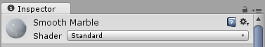
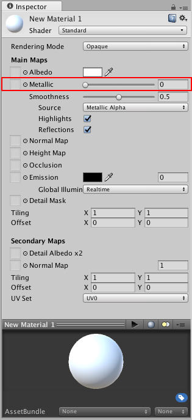

Metallic mode: Metallic Parameter

When working in the Metallic workflow (as opposed to the Specular workflow), the the reflectivity and light response of the surface are modified by the Metallic level and the Smoothness level.

Specular reflections are still generated when using this workflow but they arise naturally depending on the settings you give for the Metallic and Smoothness levels, rather than being explicitly defined.
Metallic mode is not just for materials which are supposed to look metallic! This mode is known as metallic because of the way you have control over how metallic or non-metallic a surface is.
Metallic parameter
The metallic parameter of a material determines how "metal-like" the surface is. When a surface is more metallic, it reflects the environment more and its albedo colour becomes less visible. At full metallic level, the surface colour is entirely driven by reflections from the environment. When a surface is less metallic, its albedo colour is more clear and any surface reflections are visible on top of the surface colour, rather than obscuring it.

By default, with no texture assigned, the Metallic and Smoothness parameters are controlled by a slider each. This is enough for some materials. However if your model's surface has areas with a mixture of surface types in the albedo texture, you can use a texture map to control how the metallic and smoothness levels vary across the surface of the material. For instance if your texture contains a character's clothing including some metal buckles and zips. You would want the buckles and zips to have a higher metallic value than the fabric of the clothes. To achieve this, instead of using a single slider value, a texture map can be assigned which contains lighter pixel colours in the areas of the buckles and zips, and darker values for the fabric.
With a texture assigned to the Metallic parameter, both the Metallic and Smoothness sliders will disappear. Instead, the Metallic levels for the material are controlled by the values in the Red channel of the texture, and the Smoothness levels for the material are controlled by the Alpha channel of the texture. (This means the Green and Blue channels are ignored). This means you have a single texture which can define areas as being rough or smooth, and metallic or non-metallic, which is very useful when working texture maps that cover many areas of a model with varying requirements - for example a single character texture map often includes multiple surface requirements - leather shoes, cloth clothes, skin for the hands and face and metal buckles.

In the example above, the case has an albedo map, but no texture for Metallic. This means the whole object has a single metallic and smoothness value, which is not ideal. The leather straps, the metal buckles, the sticker and the handle should all appear to have different surface properties.

In this example, a Metal/Smoothness texture map has been assigned. The buckle now has a high metallic value and responds to light accordingly. The leather straps are shinier than the leather body of the box, however they have a low "Metallic" value, so it appears to be shiny non-metal surface. The black and white map on the far right shows the lighter areas for metal, and mid to low greys for the leather.